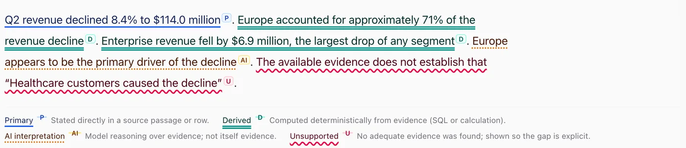
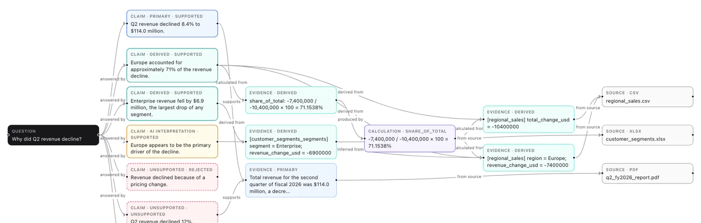

Phase 1 working
Evidence Compiler
Answers you can check.
Every claim in an LLM answer is traced to a passage, a row, a query or a calculation. If the evidence isn't there, it says so.
- Primary
- Derived
- AI interpretation
- Unsupported
- 7 design decisions
- 22 eval questions, traps included
- 11 test suites
- 1 threat model

